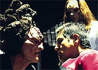
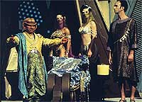

|
Janeway
vs. Primeira Diretriz, Parte II
 Chegou
o momento de entrarmos na segunda temporada de Voyager e
muito importante lembrar de certos acontecimentos dessa temporada
do seriado quando se está analisando a atitude de Janeway com
relao Primeira Diretriz. Se você quer guardar todas as
surpresas da temporada para a hora de ver os episódios, pare de
ler agora. Chegou
o momento de entrarmos na segunda temporada de Voyager e
muito importante lembrar de certos acontecimentos dessa temporada
do seriado quando se está analisando a atitude de Janeway com
relao Primeira Diretriz. Se você quer guardar todas as
surpresas da temporada para a hora de ver os episódios, pare de
ler agora.
Ainda está a? Ento vamos em frente.
Em "Maneuvers", voltaremos a ver Seska, com
aparncia Cardassiana (como fora revelado em "State of
Flux"), integrada ao alto comando do cl dos
Kazon-nistrim. Eles se aliam para tentar obter tecnologia da
Voyager e, em um ataque surpresa, roubam um dispositivo de
teletransporte.
 No
há espao para a boa e velha diplomacia: Chakotay se lana em
arriscada missão para recuperar o mecanismo sem autorizao e a
capitã acaba por introduzir sua nave em uma batalha. Uma pea
dos sistemas secundrios da USS Voyager causa de deflagrao
de guerra.
Em meio a constantes ataques e algumas mortes na limitada
tripulao, Chakotay sugere uma aliana com faces Kazons e
a adoo de alguns ideais maquis para a sobrevivncia no
quadrante Delta ("Alliances").
H uma resistncia inicial por parte de Janeway mas, com a
bno de Tuvok e sua lógica --s vezes ilgica--, a ideia
modificada e posta em prtica. A Voyager alia-se ao mais
odiado inimigo das faces, compartilhando proteo e
suprimentos, enquanto elas intensificam as perseguies.
Basta lembrar que os protocolos da Frota Estelar probem as
relaes com foras-da-lei e o envolvimento de seus oficiais nas
questões polticas de outras culturas...
Passa-se quase um ano e a Voyager descobre um planeta cujos
lderes so dois Ferengis que regem de forma desptica,
instaurando leis baseadas nas Regras de Aquisio e vivendo como
sultes ("False Profits", da terceira
temporaad). Eles estavam no quadrante Delta há sete anos,
transportados pelo "buraco de verme" descoberto na
terceira temporada de A Nova Geração ("The
Price").
 Por
mais dura e triste que fosse a realidade da populao local, a
Primeira Diretriz clara no no-envolvimento com civilizaes
pr-industriais. Porm, a capitã Janeway enviou um grupo
avanado e interferiu no desenvolvimento da espcie ao tentar
prender os Ferengis.
No desenrolar desse terceiro ano de Voyager, medida que a nave
atravessa os limites do espao conhecido por Neelix, novos
métodos de obteno de suprimentos tm de ser adotados. H
uma total mudança na postura da capitã, no que diz respeito aos
regulamentos da Federao. Comeam a ser efetuadas trocas de
tecnologia com raas nunca antes vistas e a tripulao
comercializa equipamentos da Voyager. Muita coisa muda desde a
época dos ataques Kazons...
Quem te viu, quem te v, hein, Kathryn?
Daniel
Sasaki co-editor do Trek
Brasilis
|